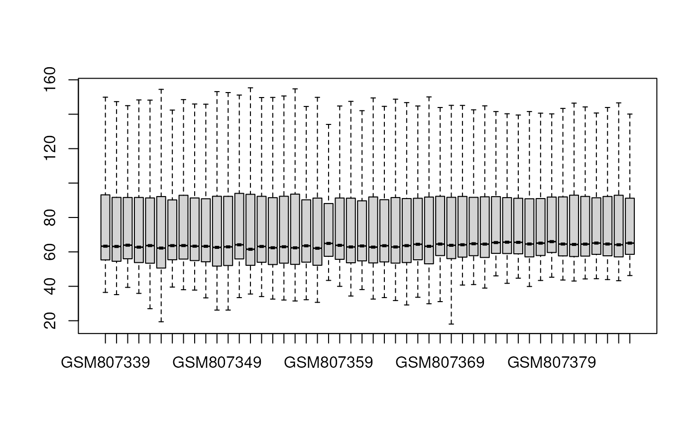

GEO dataset analysis by limma.
microarray_limma_differential(
exp,
group,
check.log2 = TRUE,
normalizeBetweenArrays = TRUE
)Normalized expression data.frame and differential analysis result
# Code from GEO2E. Thanks
library(dplyr)
GSE32575 <- loonR::download.geo.dataset("GSE32575", "GPL6102")
#> Loading required package: AnnoProbe
#> AnnoProbe v 0.1.7 welcome to use AnnoProbe!
#> If you use AnnoProbe in published research, please acknowledgements:
#> We thank Dr.Jianming Zeng(University of Macau), and all the members of his bioinformatics team, biotrainee, for generously sharing their experience and codes.
#> Found 1 file(s)
#> GSE32575_series_matrix.txt.gz
#> Warning: -------------------
#> Pls check paltform is, GPL6102
#> https://www.ncbi.nlm.nih.gov/geo/query/acc.cgi?acc=GSE32575
#> -------------------
#> [1] "Perform log2 transformation"
#> file downloaded in /master/zhu_zhong_xu/R/loonR/docs/reference
#> input expression matrix is 48701 rows(genes or probes) and 48 columns(samples).
#> input probe2gene is 48702 rows(genes or probes)
#> after remove NA or useless probes for probe2gene, 48701 rows(genes or probes) left
#> There are 48701 of 48701 probes can be annotated.
#> output expression matrix is 24615 rows(genes or probes) and 48 columns(samples).

control <- GSE32575$phenotype %>%
filter(characteristics_ch1.2 == "disease state: obese before bariatric surgery") %>%
pull(geo_accession)
experiment <- GSE32575$phenotype %>%
filter(characteristics_ch1.2 == "disease state: obese after bariatric surgery") %>%
pull(geo_accession)
exp.df <- GSE32575$expression[, c(control, experiment)]
group <- rep(c("Before", "After"), c(length(control), length(experiment)))
loonR::microarray_limma_differential(exp.df, group)
#> [1] "2023-08-28 17:34:56 HKT"
#> Error in library(umap): there is no package called 'umap'